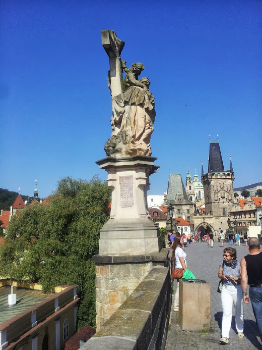
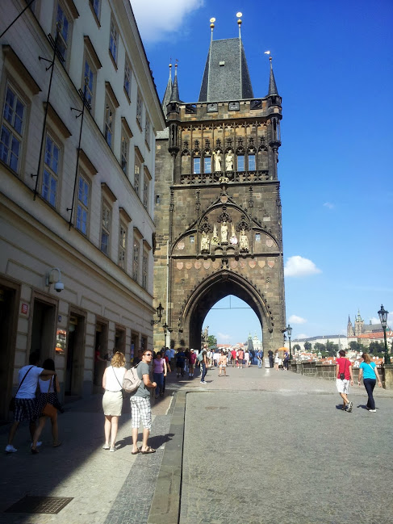
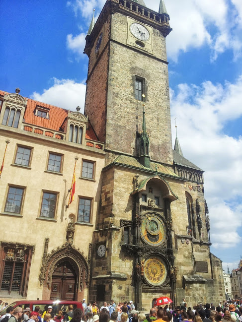
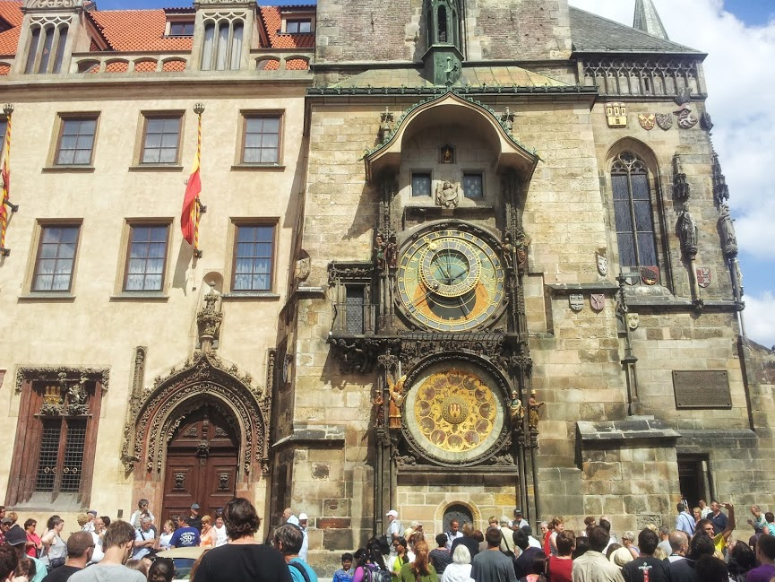
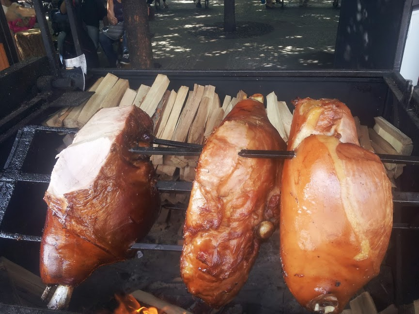
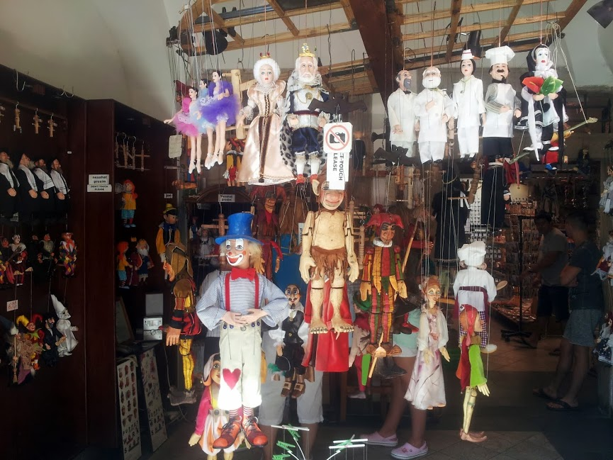

Teemu Laaksonen
Taustaa
Työskentelen rakennusteollisuudessa avainasiakasvastaavana ja olen valmistunut tradenomiksi Satakunnan ammattikorkeakoulusta vuonna 2016. Olen pitkään halunnut tietotekniikka-alalle ja aloitin ohjelmointiopinnot avoimen ammattikorkeakoulun puolella keväällä 2020.
Tavoite
Tavoitteeni on päästä opiskelemaan tieto- ja viestintätekniikkaa tutkintokoulutukseen syksyllä 2021.
Harrastukset
Olen aina ollut kiinnostunut tietotekniikasta ja alaan liittyviä harrastuksiani ovat mm:
- Tietokonekomponentit ja ylikellotus
- Ohjelmointi
- Videopelit ja pelisisällön tuottaminen Twitch-kanavalle ja YouTubeen
Tietotekniikan lisäksi harrastan musiikkia, retkeilyä ja ruoanlaittoa.
     